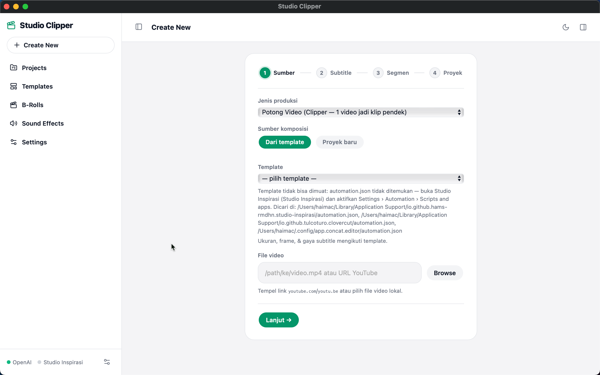

Studio Clipper adalah port standalone dari theme studio-inspirasi-chat —
dashboard produksi video lengkap dengan PHP + SQLite di dalam satu aplikasi macOS.
macOS · Intel x86_64 · ~77 MB · GPL-3.0

Seluruh logika pipeline dari theme asli dipertahankan — yang hilang cuma ketergantungan ke WordPress & MySQL.
Wizard 4 langkah: template → ganti video → trim segmen → caption → serah ke Studio Inspirasi atau ekspor langsung via API.
Satu run menghasilkan banyak proyek -001, -002, … atau biarkan AI memilih momen terbaik dari transkrip.
Tempel link YouTube — video + caption otomatis diunduh via yt-dlp ter-bundled, VTT dikonversi ke SRT.
Jelajah koleksi media dengan thumbnail, preview video, dan audio player inline.
Pantau langkah pipeline real-time — task cards per proses, batalkan kapan saja.
Semua data lokal: SQLite di ~/Library/Application Support/studio-clipper/. API key tersimpan terenkripsi AES-256.
Satu bundle self-contained — runtime-nya ikut, bukan bergantung pada sistem.
php -S sidecar + worker daemon$wpdb→PDO, options/transients, REST registryDua menit dari DMG ke produksi.
Download Studio Clipper_0.1.0_x64.dmg dari halaman Releases, lalu drag app ke folder Applications.
Bypass Gatekeeper — app belum signed: klik kanan app → Open → Open anyway, atau jalankan xattr -dr com.apple.quarantine "/Applications/Studio Clipper.app".
Aktifkan Automation di Studio Inspirasi → Settings › Automation → Scripts and apps — token automation.json terbaca otomatis.
Isi API key OpenAI / OpenRouter di Settings › Agen AI, lalu jalankan pipeline pertama dari Create New.
Build saat ini Intel x86_64 saja — ffmpeg/yt-dlp/PHP ter-bundled belum universal. Apple Silicon lewat Rosetta belum diuji.